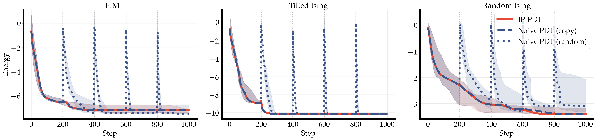
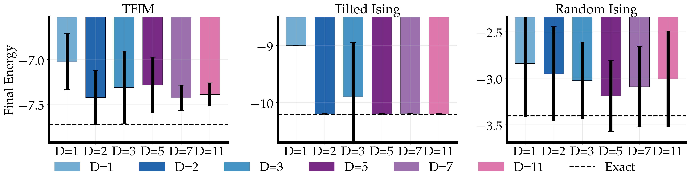
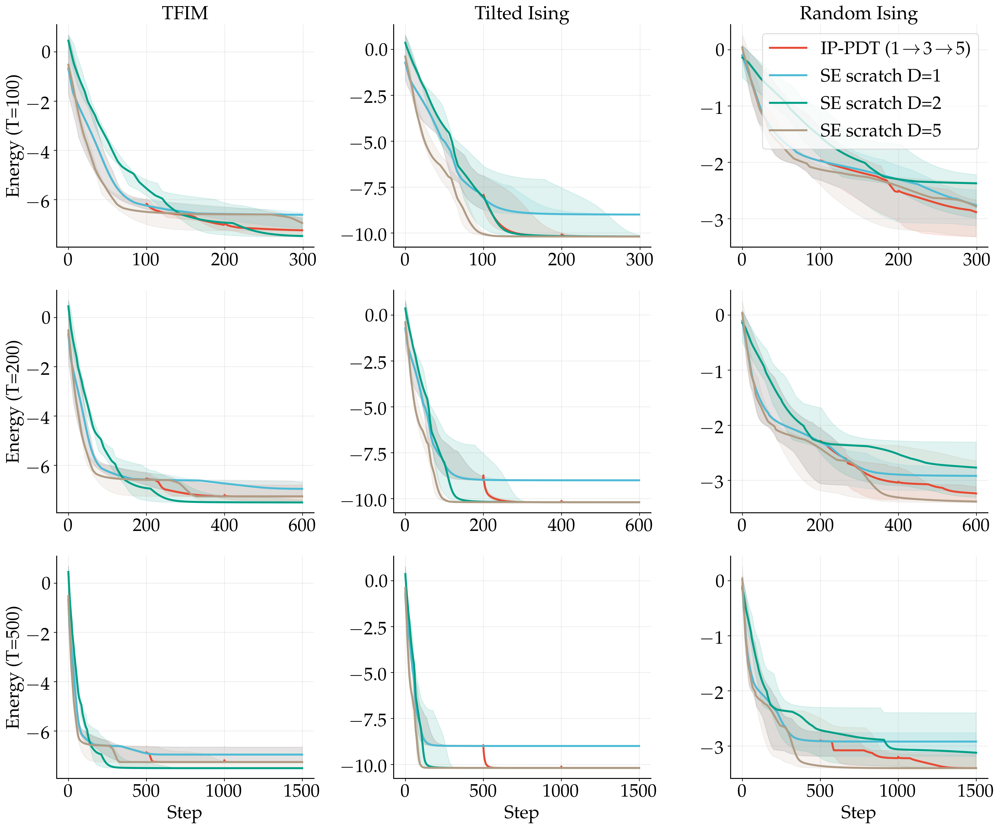
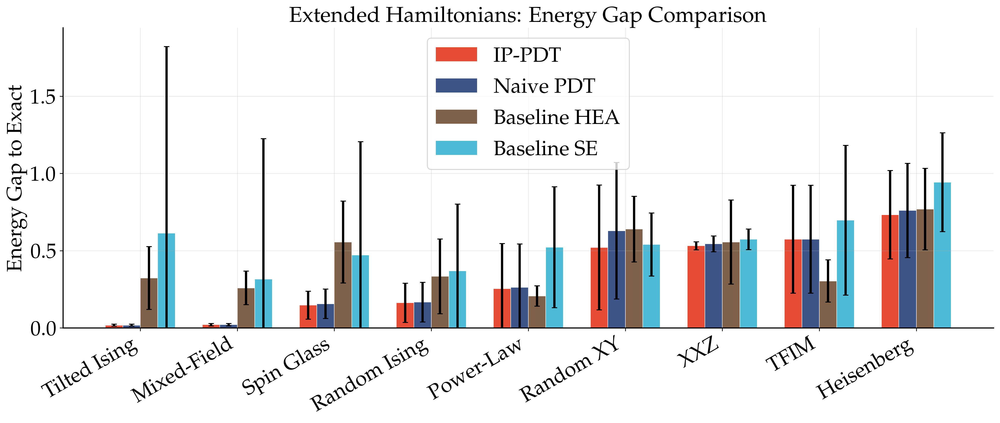

IP-PDT grows a variational quantum circuit by appending layer-pairs that cancel to the identity, so each expansion begins exactly where the last one left off; the set of states the circuit can reach provably saturates after the first expansion, yet training keeps improving, and the circuit reaches deep-circuit energies with about five times fewer two-qubit gates — inside a regime the paper maps out precisely.
Here is a fact about quantum computers that sounds like a contradiction. If you want a quantum circuit to solve a harder problem, you make it deeper — more layers, more gates, more expressive power. And yet, past a certain point, making the circuit deeper makes it impossible to use. The knobs are all there. The optimizer just can't find their settings. The gradients it follows shrink toward zero, the loss landscape flattens into a featureless plain, and training stalls. Physicists call these barren plateaus, and they are the central nuisance of near-term quantum computing.
So you're caught between two failures. Too shallow, and your circuit can't represent the answer. Too deep, and you can't train it to. IP-PDT — Identity-Paired Progressive Depth Training — is a way to thread that needle for one important task: finding the lowest-energy state of a quantum system, the job at the heart of the variational quantum eigensolver (VQE).
To see why depth backfires here, look at how these circuits are built. A hardware-efficient ansatz alternates two kinds of layers. First, single-qubit rotations: cheap, and freely adjustable — dials you can turn to any angle. Then entangling layers, made of two-qubit CNOT gates, which stitch the qubits together. The rotations are dials. The CNOTs are not: a CNOT is either present or absent, and once it's present it commits the circuit to a fixed pattern of entanglement.
That asymmetry is the whole problem. Grow the circuit by bolting on another entangling layer and you've permanently added correlations you can't dial back to zero. If the fresh layer's rotations start at random angles, the state lurches somewhere new, and its energy — which you had painstakingly driven downhill — snaps right back up. That jolt is what we mean by initialization shock.

IP-PDT's move is to append depth that begins as the identity. Instead of adding a single raw entangling layer, it adds a matched pair: a forward block — some rotations, then a CNOT ring — immediately followed by its exact undo — the same CNOT ring reversed, then the inverse rotations. Run one straight into the other and they annihilate. The reversed ring cancels the forward ring; the inverse rotations cancel the rotations. At the instant it is born, the appended pair is the identity. It changes nothing.
But, those rotation angles are still free parameters. The optimizer can wake them one gentle nudge at a time, starting from a point where the energy is exactly what it was before. No shock — by construction, not by luck.
And there's a structural bonus hidden in the cancellation. When two CNOT rings meet and annihilate, they don't merely start as identity; they stay collapsed. Stack as many pairs as you like and the entangling gates keep cancelling in twos, so the whole tower reduces to a single entangling layer wrapped in more and more single-qubit rotations. That is where the savings live: you get a deep circuit's parameter count at a shallow circuit's two-qubit gate count.
Grow a hard model out of an easy one: converge a shallow circuit, append layers that begin as the identity, then carry the solution across the seam into the deeper circuit. Two effects split cleanly — the gate savings and the never-jump-up guarantee come from the identity-pairing, while the training speedup comes from the progressive curriculum, not from the pairing itself. It is homotopy continuation on nested manifolds, and the trick travels well beyond VQE.
Here's the strange part. You'd expect all those extra layers, once you tune them awake, to make the circuit more expressive — able to reach states it couldn't reach before. They don't. And this can be proven. The set of quantum states an IP-PDT circuit can reach expands exactly once — the first time rotations appear after the entangler — and then it saturates. Every layer after that is pure overparameterization: more knobs turning on the same fixed entangling backbone, roaming the same reachable set.
For an IP-PDT circuit built on a single entangling layer, the reachable manifolds obey \(\mathcal{M}_1 \subsetneq \mathcal{M}_2 = \mathcal{M}_3 = \cdots = \mathcal{M}_D\) for every \(D \ge 2\): the set of representable states expands exactly once — when post-entangler rotations first appear — and then saturates. Every depth beyond \(D = 2\) is pure overparameterization of single-qubit \(\mathrm{SU}(2)\) rotations around one fixed entangling backbone.
The reachable sets nest once and then freeze. Depth two can already reach everything depth eleven can. The authors checked it directly: stack the layers to two, three, five, all the way to eleven, and the lowest energy the circuit can represent doesn't budge.

And yet training keeps getting better. Add those provably redundant layers and the optimizer reliably finds lower energies, faster, than the shallow circuit manages on its own. The circuit is no more expressive, but it is more trainable. Expressibility has hit its ceiling; trainability is still climbing. The authors call this trainability beyond expressibility — it is the paper's title for a reason.
If you're going to grow a circuit over and over, you'd like a promise that no single expansion can undo your progress. IP-PDT gives exactly that promise, unconditionally. Because every appended pair composes to the identity at initialization, the energy at the start of a new stage equals the energy at the end of the last one — up to a whisper of deliberate noise, a tiny jitter \(\sigma\) that breaks a symmetry so the fresh knobs aren't born perfectly degenerate.
Because each appended block-pair composes to the identity at initialization, an expansion never raises the energy: a new stage begins at \(E_{\text{new}} = E_D^{\star} + \mathcal{O}(\sigma)\), where \(E_D^{\star}\) is the converged energy of the previous stage and \(\sigma\) is a small symmetry-breaking jitter. The guarantee is one-sided — a new stage starts no higher than the old one finished — and it assumes nothing about the landscape.
The energy never jumps up. Expansion after expansion, the worst case is that nothing improves; it cannot get worse than a hair. That is what kills initialization shock — not as a heuristic that usually works, but as a theorem that always does.
The right way to picture the whole procedure is homotopy continuation: solve an easy problem, then deform it, step by step, into the hard one while carrying the solution along. So much for the picture — does it deliver? The experiments run on nine spin-system Hamiltonians, the energy-minimization problems VQE is built for, simulated exactly on a classical computer, ten random seeds each. Every method is handed the same parameter count and the same step budget, so the comparison is about the method, not the resources.
The headline is cost. On problems whose ground state is within reach of a single entangling layer, IP-PDT matches or beats a full-depth hardware-efficient circuit while spending about five times fewer CNOT gates. Two-qubit gates are the expensive, error-prone resource on real hardware — the thing you most want to use less of — so a fivefold cut at equal accuracy is a number that matters for near-term devices.

Across the whole benchmark, IP-PDT wins on seven of the nine Hamiltonians. It loses on two — the transverse-field Ising model right at its critical point, and a long-range power-law Ising chain.

The trend also survives scale. Pushed to sixteen qubits, the deep hardware-efficient baseline degrades sharply — barren-plateau country — while the single-entangler circuits stay trainable. (The main benchmark is six qubits; twenty and beyond is future work.)
| Hamiltonian | Structure for a single entangler | Result |
|---|---|---|
| Tilted Ising | Easy | win |
| Mixed-field Ising | Easy | win |
| Random Ising | Medium | win |
| Spin glass + transverse | Medium | win |
| XXZ (Δz=0.5) | Medium | win |
| Random XY | Medium | win |
| Heisenberg (dense) | Hard | win |
| TFIM (at criticality) | Hard | loss |
| Power-law Ising (α=2) | Hard | loss |
Seven wins, two losses, on the extended six-qubit benchmark. “Structure” measures how close the ground state sits to what a single entangling layer can reach; the labels are read off after the fact, not fed in.
A method is only as trustworthy as its own account of where it fails. IP-PDT's regime is narrow and clearly drawn, so let's draw it — three caveats, none of them fine print.
First, this is not a general escape from barren plateaus. The larger gradient signal that helps IP-PDT shows up on local cost functions and is partly just a shallow-circuit effect that a shallow hardware-efficient circuit shares; for global cost functions every ansatz here flattens out identically and the single-entangler circuit offers no advantage, exactly as the barren-plateau literature (Cerezo and colleagues) predicts.
Second, the expressibility ceiling is real. When the target ground state sits far from anything a single entangling layer can reach, the shallow circuit simply cannot represent it — which is precisely why IP-PDT loses on the two hardest Hamiltonians. The dividing line, tellingly, is structure, not the sheer amount of entanglement: the single-entangler circuit nails even a highly entangled GHZ-like “cat” state, and stumbles only when a state's structure falls outside its reach.
Third, the whole construction rests on a single entangling layer — one CNOT ring. Extending the backbone to more than one entangling layer is open, and it is the most natural next question.
Put plainly: IP-PDT is a useful VQE training method with a clearly mapped regime of validity. It shines when the ground state is structurally simple, on local costs, under a limited budget. It is not a universal barren-plateau cure — and it tells you exactly where it stops working.
Strip away the machinery and IP-PDT is a modest idea that earns its keep. Add layers that begin as the identity and two good things follow for free from the pairing itself: the energy can never jump up when you expand, and the two-qubit gates you were afraid of quietly cancel in pairs, so you pay only a shallow circuit's hardware cost. The trainability is a separate gift, and it comes from the curriculum — growing the circuit shallow-first and carrying the solution up through the depths, rather than training a deep circuit cold. The surprise the two ideas turned up together — that a circuit can keep getting easier to train long after it has stopped getting more expressive — is worth sitting with, because it pries apart two things the field usually bundles into one.
The obvious next move is written into the last caveat: the whole story rests on one entangling layer. What happens with two — or \(K\)? Does the reachable set climb one more rung and saturate again, or does the barren plateau return? That is the question the paper leaves open, and it's a good one.